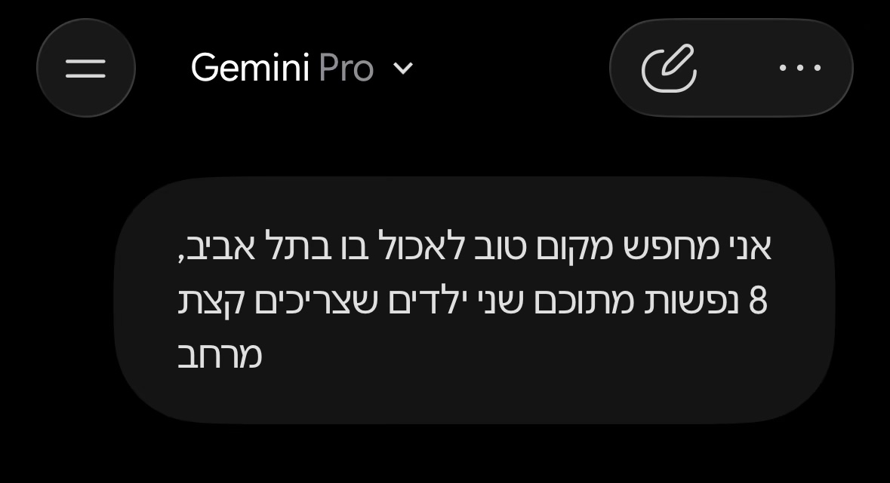

A birthday dinner. Tel Aviv. Eight of us — two of them kids who need space.
And that’s not my problem. It’s a very big problem — for the venues.
A model can’t own what it never sees.
And next year, I won’t start from zero.